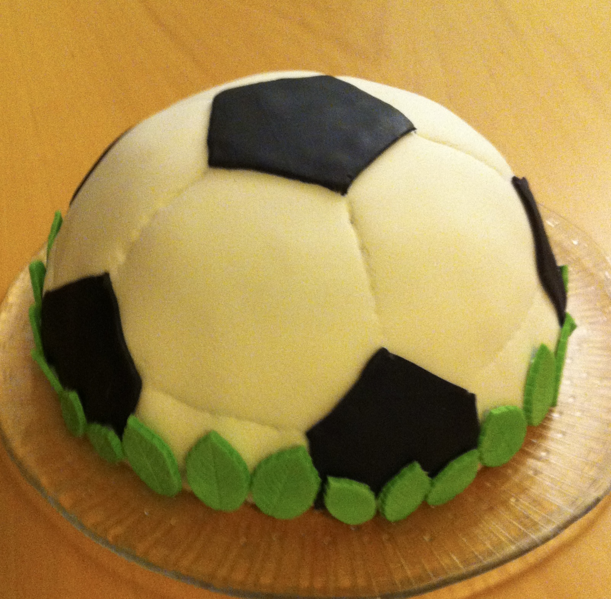

Hei!
Olen Päivi, espoolainen harrastelijaleipuri. Intohimonani on erityisesti fantasiakakut. Tarkemmin sanottuna kakut, jotka näyttävät joltain muulta kuin kakulta. Kakkujen lisäksi leivon jonkin verran myös muita leivonnaisia, esim. koristellut focacciat kuuluvat suosikkeihini.
Kakkuinnostukseni alkoi 10 vuotta sitten kun poikani Joona toivoi 7v syntymäpäivilleen jalkapalloaiheista kakkua. Tämän jälkeen sain joka vuosi uuden kakkuhaasteen: aarrearkku, Lego, jalkapallokengät, hampurilainen, pizza, sulkapallomaila jne. Vietimme Joonan syntymäpäiviä usein kolmessa osassa, jolloin sain hyvän syyn tehdä kolme erilaista kakkua. Tästä muotoutuikin ns. ”kakkutrilogiat” eli kolmen kakun sarjat samalla teemalla. Trilogiakakkuja olen tehnyt karkki-, peli- ja herkkuruoka-teemalla. Näiden syntymäpäiväkakkujen lisäksi kakkuja on tullut vuosien saatossa tehtyä eri teemoilla ja aihepiireillä jos jonkinmoisiin kissanristiäisiin, kirjaimellisesti. ”Ei niin pientä juhlaa etteikö voi leipoa kakkua.”
Leivontaoppini olen alun perin saanut äidiltäni. Äiti leipoi perheemme kaikki leivät ja pullat kotitilamme viljan jauhoista. Äidin leivonta repertuaariin kuului niin ruisleivät, hiivaleivät, rieskat, sämpylät, pasteijat, pullat, tortut, piirakat, piparit, pikkuleivät, kuivakakut kuin perinteiset kermatäytekakutkin. Oma leivontarepertuaarini on paljon rajoittuneempi ja erityisesti leivän leivonnan osalta en yllä likimainkaan äitini tasolle.
Sana ”Kakkulaari” liittyy tähän historiaan ja on kunnianosoitus äitini leivontaopeille ja -taidoille sekä äidin leivonnassa käyttämille kotitilan jauhoille.
Wikipedia:
Kakku on leivonnainen, joka tehdään useimmiten sokerista, kananmunista, jauhoista ja leivinjauheesta valmistetusta taikinasta.
Laari on seinämillä muusta tilasta erotettu juuresten, viljan tai muiden maataloustuotteiden varastointipaikka.
Pidän kakkujen leivonnassa erityisesti suunnittelemisesta. Ensimmäisenä ideoin tilanteeseen sopivan aiheen, jonka ympäriltä lähden pohtimaan eri vaihtoehtoja sekä mahdollisia toteutustapoja. Tähän osuuteen käytän yleensä paljon aikaa etsien vinkkejä niin erilaisilta leivontasivustoilta kuin Googlen ihmeellisestä maailmasta. Tässä vaiheessa tulee usein pohdittua omista kaapeista löytyviä välineitä ja tarvikkeita ja niiden hyödyntämistä halutun lopputuloksen aikaansaamiseksi. On erityisen mielenkiintoista miettiä miten jonkin asian saa näyttämään joltain, esim. miten sokerimassan saa näyttämään puulta, lasilta, kiveltä tai kankaalta.
Olipa suunnitelma miten hyvä tahansa, niin toteutusvaiheessa sitä joutuu lähes aina lennossa muuttamaan suuntaan tai toiseen. Siksi varaudun yleensä valmiiksi muutamaankin vaihtoehtoiseen toteutustapaan. Lopputulos ja/toteutus vastaa siis harvoin täysin alkuperäistä suunnitelmaa. Juuri tämä tekeekin kakun teosta kiehtovaa, koska oman luovuuden käyttämiselle ei ole mitään ylärajaa ja lopputulos saattaa yllättää minutkin.
Kakkujen tekeminen on minulle rakas harrastus ja se on mahtavaa vastapainoa leipätyölle. Kakku-uralleni mahtuu kaksi saavutusta. Ensimmäinen niistä on vuodelta 2013, jolloin pääsin Kinuskikissan kesäkakkukilpailussa jaetulle ensimmäiselle sijalle Mansikkakiulukakullani.
Toinen saavutus on vuodelta 2020, jolloin päädyin Joonan syntymäpäiväkakkutrilogialla MTV-uutissivustolle

Myös tälle Kakkulaari-sivustolle sain alkukimmokkeen Joonalta, joka halusi harjoitella web-sivuston tekemistä. Tämä on siis ollut yhteinen projektimme, hyvin antoisa ja opettavainen sellainen meille molemmille! Työskentelen IT-alalla toteuttaen erilaisia raportointisovelluksia asiakkaille. Tämän projektin myötä pääsin itse asettumaan asiakkaan rooliin ja olemaan itse se hataria määrityksiä antava vaativa asiakas, jonka vaatimukset kasvaa ja muuttuu alati projektin edetessä. Tässä projektissa poikani oli täysin vastuussa IT-asiantuntijan tehtävästä, sillä web-sivujen tekemisessä tarvittavaa osaamista minulla ei ole, vaikka IT-sovelluksia työkseni rakentelenkin. Hän selviytyi projektista hienosti ja osoitti ihailtavaa sitkeyttä tässä vaativassa tehtävässä asiakkaan ollessa mitä hankalin.
Sekä kakkuharrastukseni että tämän kakkulaari-sivuston syntyminen on siis täysin Joonan ansiota.
Kiitos Joona! ❤️